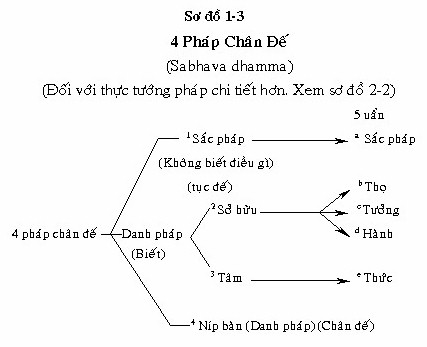

|
Giáo trình Thiền
Minh Sát Tuệ Tác giả: Thiền Sư Achaan
Naeb
1.5. THIỀN MINH SÁT Tuệ Minh Sát [1] là phương pháp tu tập độc nhất có thể dẫn dắt hành giả đi đến diệt khổ. Ðây là mục đích cao cả nhất của Phật giáo, và như vậy hành giả nên hiểu biết Thiền Minh Sát là gì? 1. Thiền Minh Sát là một hình thức trí tuệ (pañña) biết danh sắc là vô thường, khổ và vô ngã (không có đàn ông, đàn bà). Những loại trí tuệ khác là không phải là Tuệ minh sát (vipassanā-ñañā); chỉ có trí tuệ này mới biết điều này. Thanh tịnh đạo (Visuddhi Magga) nói rằng đây là một loại "trí tuệ kỳ diệu" đặc biệt. 2. Ðối tượng của Thiền Minh Sát là danh và sắc trong sát na hiện tại. Nếu hành giả nhận biết một điều gì, ngoài sắc và danh của bản thân mình, hành giả không thể nhận ra Trạng Thái Thật của Bản chất Vạn Vật (sabhava). 3. Nhiệm vụ của Thiền Minh Sát là đoạn trừ phiền não khi nó xảy ra bất cứ nơi nào ở sáu căn môn. Do đó chúng ta phải tu tập quan sát từng sát na hiện tại ở sáu căn môn, bởi vì phiền não xuất hiện ở nơi đó. 4. Lợi ích của Thiền Minh Sát là đoạn tận Vipallāsa (ảo tưởng) cho rằng sắc pháp là xinh đẹp, danh và sắc là trường tồn, hạnh phúc, danh và sắc là của ta. Khi tuệ minh sát mạnh mẽ, nó sẽ dẫn đến sự chấm dứt khổ (Nirodha) và kể từ đó là Níp Bàn. 5. Sự tu tập Minh Sát Tuệ sử dụng Thiền Tứ Niệm Xứ (Satiptthana) như được vạch ra trong bộ kinh Ðại Niệm Xứ. Những pháp này (dhamma) rất hữu ích:
a) Sáu nền tảng của Minh sát
tuệ- Thiền Minh Sát (bhumi)
[2] Các nền tảng Minh sát là những đối tượng mà chúng ta cần phải quan sát khi tu tập minh sát tuệ, để có được tuệ minh sát phát sanh, có sáu loại:
- Năm uẩn (Khandha) Tất cả điều này được tóm gọn lại chỉ là danh sắc, bởi vì một người đến với sự tu tập thiền thiền quán là quán sát danh sắc, và nó sẽ mang chân lý đến Tuệ minh sát (Thiền Minh Sát trí tuệ). Chân lý là sự biết rằng danh sắc là vô thường, khổ và vô ngã, trí tuệ (pañña) đó được gọi là Tuệ Minh sát, và có thể đoạn tận phiền não. Nền tảng Minh sát là pariyatti (pháp học) và nó là sabhava thì hết sức sâu rộng. Hành giả phải tu học "bhumi" cho đến khi hiểu rốt ráo chúng. Khi vị này đến với sự tu tập phải biết cách nào để quan sát chúng (rup nàma). Ví dụ, vị này phải biết về dục giới (coi thuộc nhận thức của giác quan - xứ - Hình 2.1), hoặc Tứ uy nghi (đi, đứng, ngồi, nằm). Nếu vị này thiếu pháp học và không biết cách quán sát danh sắc), vị này không thể tu tập Minh sát đúng cách và pháp học không thể là paccaya (nhân) cho quả bởi vì pariyatti (pháp học), patipatti (pháp hành), và pativedha (pháp thành) dựa vào nhau, và không thể tiến hành riêng rẻ. Tuệ minh sát phải nhận thức định luật Tự nhiên cho rằng tất cả sự sống (sự hiện hữu) đều có ba đặc tính (tam tướng): vô thường, (anicca), khổ (dukkha) và vô ngã (anatta). Nếu một người không biết được Ðịnh Luật Tự Nhiên, được gọi là vô minh (avijjā). Không biết được Ðịnh Luật Tự Nhiên, người ấy vẫn chịu trong vòng sinh tử luân hồi (samsara-vatta), và không thể dứt khổ. Kinh điển định nghĩa vô minh (Avijjā) là không biết được Tứ Diệu Ðế. Nếu một người không biết Ðịnh Luật Tự Nhiên, người ấy không đạt được Tứ Diệu Ðế, và như vậy là vô minh . 1.5.1. Ba loại Trí Tuệ Tu Tập (khác biệt với trí tuệ phàm tục): 1. Trí văn (sutta pañña) [3] là sự biết được pháp học hoặc nghe thuyết pháp trước khi tu tập. 2. Trí tư (cinta pañña) là sự biết được bằng cách tu tập, như chúng ta đang thực hiện bây giờ. 3. Trí tu (vipassanā pañña) là sự biết được bằng tuệ minh sát, đó là chỉ có danh và sắc và chúng thì vô thường, khổ và vô ngã. (Pháp học đúng sẽ dẫn đến sự tu tập đúng và pháp hành đúng sẽ dẫn đến tuệ giác). Tu tập thiền quán thì khác với Tu tập thiền chỉ. Nếu hành giả không biết điều này, có thể lẫn lộn hai loại với nhau và tu tập thiền không tiến triển, và không diệt khổ . Tu tập thiền chỉ là thiện pháp, tuy nó dẫn đến vắng lặng nhưng vẫn còn trong vòng luân hồi. (Xem sự khác biệt giữa Thiền chỉ, Thiền định và thiền quán, thiền minh sát ở Phần 1.9). 1.5.2. Ðịnh (samādhi) Ðịnh có nghĩa là tập trung, hoặc kết quả của sự tập trung. Trong nghĩa sau, một số vị thầy thích định nghĩa mở rộng hơn. "sự gom lại". Ðịnh rất ích lợi trong thiền quán nhưng chỉ đến mức độ tập trung tạm thời. Có ba loại định (tập trung) cơ bản:
1. Khaṇika Samādhi: Sát na định Như được lưu ý ở trên, chỉ sát na định là cần thiết đối với sự tu tập Minh sát tuệ. Sát na định - Khaṇika samādhi Lý do chúng ta phải dùng sát na định cho minh sát tuệ đó là sát na định vẫn còn nằm trong 6 căn. Ví dụ, khi thay đổi các đối tượng, từ oai nghi ngồi cho đến danh nghe (căn ý và căn thinh) cận định có thể theo sự thay đổi. Cận định là công cụ cơ bản để khiến cho Minh sát tuệ tiến triển. Chính sự thay đổi của các đối tượng này giúp cho hành giả thấy được sự sinh và diệt của các tâm thức. Khi thấy được sự vô thường trong tâm, sự vô thường này có nghĩa là tâm không kiểm soát được và do đó khổ và vô ngã. Ðịnh nâng cao đơn thuần chỉ là nhất tâm và nó không thể dùng để nhận thấy sự sanh và diệt của tâm. Khi người nhận ra được sự vô thường trong tâm. Nó phải được nhận thức bằng Trí Tuệ và không phải định tâm. 1.6. SÁT NA HIỆN TẠI & THỰC TƯỚNG PHÁP (Sabhava dhamma) Sát na hiện tại (arompaccacpan) có thể định nghĩa như sau: 1. Danh và sắc xuất hiện độc lập ở thời gian đã được ấn định theo sự mong muốn của chúng ta. 2. Danh và sắc được nhận thấy với 3 danh: Nhiệt tâm tinh cần, chánh niệm và tỉnh giác (atapi, sati, sampajanna). Nếu hành giả nhận thức được sát na hiện tại, a) Ðối tượng của 3 danh phải là chân lý tuyệt đối (paramattha = không phải đàn ông, đàn bà, vô ngã v.v...); đó là danh và sắc. b) Ðối tượng phải làTứ Niệm Xứ. Những đối tượng khác (Tứ niệm xứ) không được lẫn lộn. Ví dụ, khi quán sát oai nghi ngồi, nếu oai nghi ngồi có sự đau đớn, đừng quán sát tâm biết được oai nghi ngồi có sự đau đớn. Chỉ biết rằng oai nghi ngồi là những sự khổ. Chỉ quán sát "thân trong thân". c) Ðối tượng cần phải được quán sát bằng 3 danh (Yovacara = nhiệt tâm tinh cần, chánh niệm và tỉnh giác. d) Danh và sắc được nhận thấy ở sát na hiện tại, phải xuất hiện độc lập về sự ham muốn của chúng ta. Chúng ta không thể tạo nên sát na hiện tại. Những ví dụ của phần sau cũng sẽ là sự đi chậm rãi cho mục đích tạo nên tuệ giác, hoặc sự cử động cánh tay chậm rãi để nhận thấy các nhóm (Kalapa) phân tử sinh và diệt. Ðây không phải là khoảnh khắc (sát na) hiện tại. e) Một ví dụ về sát na hiện tại là chánh niệm tỉnh giác (satisanipajana) quán sát oai nghi ngồi, nhưng vẫn có một chút phiền não, có lẽ là một sự ham muốn tiềm ẩn để thấy được oai nghi ngồi. Rồi sau đó một tiếng sét nổ. Sự nhận biết để lại oai nghi ngồi và nghe tiếng sấm nổ. Tự động có tâm nhãn thức. Ðây là sát na thật hiện tại (Thiền Minh Sát) ở khoảnh khắc đó không có phiền não. Có hai loại sát na hiện tại: Sát na hiện tại nghe và sát na hiện tại tuệ giác. Sát na nghe được người ta nhận thức trong sự tu tập siêng năng bình thường. Sát na nghe đi trước và dẫn đến Tuệ giác, trong tính cách mà hai nẹp cây khô cọ xát mạnh với nhau tạo ra lửa. Nếu sự tu tập được thực hiện đúng với arompacan, nó sẽ diệt trừ Abhijjhā (ham muốn) và không ham muốn) trong năm uẩn (Khandha). Sau đó tuệ giác sẽ xuất hiện. Sát na tuệ giác thì rất khó nắm bắt, giống như cố gắng bắt một con cá trong hồ bằng hai tay. Sát na tuệ giác nhận thấy rằng một người ngồi là oai nghi ngồi chứ không phải "hành giả". Thậm chí không phải là hành giả biết oai nghi ngồi - nó là 3 danh (hành giả) [4] Và trong thực tế, ngay cả không có oai nghi ngồi, chỉ là bản chất thật tự nhiên. Sabhava đó mà chúng ta gọi oai nghi ngồi không biết bất cứ điều gì. Danh pháp biết được đối tượng (oai nghi ngồi) cũng là bản chất thật tự nhiên. Chỉ có 2 bản chất thật tự nhiên trong thế gian: Loại không biết điều gì và loại biết được. Sát na tuệ giác hiện tại là khó nắm bắt, bởi vì sự tồn tại của phiền não. Nó cũng cần phải tu tập. Nắm bắt được sát na tuệ giác hiện tại thì giống như việc cố sức đọc trước khi học mẫu tự. Trừ phi hành giả biết được mặt chữ, nếu không thì không thể nhận ra từ ngữ. Ngay cả khi thay đổi từ tư thế ngồi sang đứng, người ta vẫn duy trì sát na hiện tại, ngược lại thì phiền não để tấn công vào. Khi sát na hiện tại được duy trì liên tục, phiền não bị loại ra ngoài và sát na tuệ giác hiện tại sẽ phát sinh và đoạn diệt vô minh. Hỏi: Làm cách nào hành giả biết mình ở trong sát na hiện tại? Ðáp: Vị này sẽ luôn có chánh niệm và tỉnh giác. Hành giả phải liên tục có chánh niệm ở từng sát na hiện tại. Nếu sự việc như vậy, chân lý sẽ xuất hiện; chân lý đó là khổ, danh và sắc. (chánh niệm và tỉnh giác thực tế xảy ra cùng nhau trong sát na hiện tại của danh và sắc, chúng đoạn diệt ham muốn và không ham muốn trong "thế giới" của 5 uẩn). Sự tu tập này dẫn hành giả đạt được bản chất thực tự nhiên - như vậy sự thay đổi tà kiến đó về danh và sắc là "hành giả". 1.6.1. Thực Tướng Pháp (Sabhava dhamma). Thực tướng pháp là trạng thái thật của Bản chất tự nhiên của vạn vật trong vũ trụ. Nó là thực thể - nhưng không phải là đàn ông, đàn bà, người nào đó hoặc tâm hồn. Ví dụ, oai nghi ngồi là thực tướng của tư thế ngồi. (Thực tế, khi trạng thái thật của bản chất vạn vật được người ta nhận ra thậm chí không phải là oai nghi ngồi, nó chỉ là thực tướng). Vũ trụ không phải là một thực thể trống rỗng, như một số hình thức Phật giáo, nó "chỉ là vô ngã không có linh hồn". Bản chất thật của các pháp bao gồm danh và sắc với danh được chia thành 3 phần dưới đây:  (Ðối với thực tướng pháp chi tiết hơn, xin xem Sơ đồ 2-2) Lưu ý: (sơ đồ 1-3) a) Tất cả bốn phần của pháp chân đế là pháp duyên khởi, trạng thái thật của bản chất sự vật, ngoại trừ là chúng ta ít nhận chân được chúng. b) Ba thành phần đầu là danh và sắc, chúng là pháp Hiệp thế. Sắc pháp trong sự tu tập chỉ biết cảnh -nó không biết bất cứ điều gì; Danh cũng biết cảnh: nhưng danh cũng biết cảnh (nhãn thức và nhĩ thức). Ðây là cõi Hiệp thế (Lokiya) - và vẫn nằm ở trong vòng sinh tử luân hồi (samsara - cakka). Ở siêu thế (lokuttara), Níp bàn trở thành đối tượng tâm đạo (magga - tâm) và tâm quả (phala - tâm) bây giờ biết được níp bàn là đối tượng. Chính tâm đạo xác trừ phiền não. Trong cõi Hiệp thế, chánh niệm tỉnh giác là tuệ minh sát. Trong siêu thế, chánh niệm, tỉnh giác trở thành tâm đạo. (Tâm đạo theo nghĩa đen là "tâm thức đạo" thực ra đề cập đến tuệ đạo, đó là tuệ thứ 14). Níp bàn là pháp siêu thế (lokuttura dhamma), ngoài 5 uẩn. Có 2 loại hiện tại (paccupan): 1. Pháp hiện tại(paccupana dhamma): Sắc pháp và danh pháp sinh và diệt rất nhanh. Nhưng chúng ta không thấy nó bởi vì phiền não che giấu. Nhưng chỉ có oai nghi ngồi hoặc oai nghi đứng v.v... Chúng ta nghĩ rằng "chúng ta ngồi", "chúng ta đứng" "chúng ta uống" v.v... Ðây là pháp hiện tại, và nó hiện hữu dù chúng ta thấy nó hoặc không-ngay cả lúc ở nhà, khi không tu tập. 2. Sát na hiện tại (paccupanarom): Danh pháp và sắc pháp xuất hiện ở một thời gian ấn định riêng biệt trong sự ham muốn của chúng ta - "oai nghi ngồi; oai nghi đứng v.v... khi chúng ta đang tu tập, chúng ta dùng pháp hiện tại và nó phát triển thành sát na hiện tại. Ba danh pháp cùng làm việc với nhau và "chúng ta ngồi" trở thành oai nghi ngồi - như vậy đó là sát na hiện tại. Là sát na hiện tại chánh niệm và tỉnh giác phải có sắc pháp và danh pháp trong sát na hiện tại. Ba đối tượng đầu tiên ở trên (sơ đồ 1-3) được người ta nhận ra không có phiền não. Danh pháp và sắc pháp là các đối tượng cho tới khi tuệ minh sát thứ 12 (anulomañāṇa), sau đó bị đoạn trừ. Ở điểm này, Níp bàn trở thành đối tượng của tâm đạo, tâm quả và tâm siêu thế hoặc đạt được trạng thái siêu thế. Khoảnh khắc / sát na hiện tại là danh pháp và sắc pháp đang được quán chiếu. Chúng có thể là thiện pháp, bất thiện pháp, hoặc trung tính (obyakata) - nhưng chúng phải là một trong 4 thành phần của Tứ niệm xứ (Satipaṭṭhāna). Minh sát tuệ chỉ có thể tiến hành khi phiền não tồn tại [5] . Nó cũng làm việc, hoặc được ứng dụng khi có phiền não. Ví dụ khi nghe được một âm thanh, phiền não sẽ nghĩ rằng "chúng ta nghe" và như vậy thiền minh sát nhắc nhở chúng ta rằng "nhĩ thức", và đoạn diệt phiền não. Hỏi: 3 Danh quan sát và 3 Danh nắm được sát na hiện tại - có phải chúng giống nhau? Ðáp: Tên "sát na hiện tại" là giống, nhưng 3 danh quan sát (trí tư) và 3 danh nắm được sát na hiện tại (trí tu) thì khác biệt. Hành giả nên tu tập nắm bắt sát na hiện tại, giống như việc hành giả sẽ phải học mẫu tự để đọc. Trí tư như việc học tập ABC và trí tu, tiếp theo, giống như biết đọc. Hỏi: Làm cách nào hành giả có thể nâng cao cơ hội của mình để nắm bắt sát na hiện tại? Ðáp: Nếu hành giả có sự nhận biết (tỉnh giác) vị này sẽ không nghe quá nhiều những gì đang xảy ra quanh mình - hoặc vị này sẽ không nghe nó quá chát chúa. Sát na hiện tại của oai nghi ngồi sẽ loại bỏ hoặc làm cho âm thanh nhỏ lại. Như vậy, để gia tăng những cơ hội nắm bắt khoảnh khắc hiện tại, hành giả chắc hẳn phải gia tăng sự tỉnh giác. Hỏi: Có phải chúng ta muốn để dùng một tư thế đã ấn định để nhận thấy sắc của tư thế đó? Ðáp: Hành giả đừng bao giờ ngồi để nhận thấy oai nghi ngồi, hoặc đi để nhận thấy oai nghi đi. Tất cả các tư thế cần được sử dụng để chữa trị sự khổ đau từ một tư thế trước đó. Sau đó chúng ta có thể thấy oai nghi ngồi hoặc oai nghi đi một cách tự nhiên, khi nó phát sinh. Hỏi: Khi hành giả ở trong sát na hiện tại, vị này tự động có giới, định và tuệ. Tại sao? Ðáp: Khi hành giả nhận thức được oai nghi ngồi bằng trí tu, " quan sát phiền não rõ ràng " (loại ở trong giới) bị đè nén. Sự việc này chứng tỏ giới hiện hữu. Những phiền não của tâm (Nivāraṇas) được loại bỏ tạm thời. Ðiều này chứng tỏ định thì hiện hữu. Cuối cùng, phiền não được che giấu tà kiến được loại bỏ tạm thời. Ðiều này chứng tỏ tuệ hiện hữu, bởi vì trí tu dẫn đến chánh kiến (sammaDiṭṭhi) đó không phải là "hành giả" đang ngồi.
1.7 NHIỆT TÂM TINH CẦN - CHÁNH
NIỆM - TỈNH GIÁC, KHÉO TÁC Ý VÀ HỌC TẬP Ðịnh nghĩa: A) Atapi có nghĩa là "nhiệt tâm tinh cần" (Tiếng Thái - Kwarun pean). B) Sati có nghĩa là "chánh niệm". Có 2 loại chánh niệm (tất cả sati đều là thiện pháp và đừng nên lầm lẫn với sự "chú ý" hằng ngày. Ðây là Saññā - tưởng). 1. Bình thường, hoặc tục đế, chánh niệm thường thực hiện bất cứ hành động nào của thiện pháp với sự tỉnh giác - chẳng hạn như cúng dường thực phẩm cho các vị sư, v.v... 2. Chánh niệm để tu tập Tứ Niệm Xứ (Satipaṭṭhāna) là chánh niệm vào danh và sắc, trong khoảnh khắc hiện tại. C) Sampajanna có nghĩa là "tỉnh giác". Nó luôn luôn được sử dụng với chánh niệm. Ví dụ, để nhận biết tư thế nào là "chánh niệm", để biết đó là oai nghi ngồi nên gọi tỉnh giác. Khi chánh niệm tỉnh giác đến với nhau, được gọi là sự tỉnh giác (tiếng Thái - rusathua). Chánh niệm và tỉnh giác được mô tả ở trong các kinh điển như là "những giới đức của sự hỗ trợ tuyệt vời" trong sự đạt đến chánh kiến và nhận thức Bát Chánh Ðạo. A, B, C ở trên được gọi là ba danh (Yogāvacara). Có 4 giới đức hỗ trợ chánh niệm và tỉnh giác: 1. Sống trong một vùng hoặc một môi trường thích hợp (được sinh ra trong một quốc gia, ở đó có giáo pháp của Ðức Phật được truyền dạy). 2. Thân cận với người tốt lành (người hiểu biết sự tu tập thiền Minh sát để thoát khổ. 3. Ðặt mình ở một đường hướng đúng đắn (có một khát khao mạnh mẽ muốn diệt khổ) 4. Ðã được thực hiện (ở những kiếp quá khứ) những hành động công đức (pubbekata - puññata) D) Tác ý (manasikara), hoặc "tác ý có nghĩa" chú tâm vào một điều gì với sự hiểu biết chính xác đây là nhân". Nó cũng đề cập đến sự hiểu biết về trạng thái thật của vạn vật (sabhava) của một điều gì (dành cho một sự thảo luận đầy đủ về thực tướng, xem 1.6.1) E) Sikkhati (quan sát) cho chúng ta biết, nếu chúng ta từ bỏ sát na (khoảnh khắc) hiện tại. Thảo luận: A) Apati là sự nhiệt tâm để loại trừ "phiền não" (abhjjha và donanassa) để giúp chúng ta mang đến chánh niệm và tỉnh giác. B, C) Chánh niệm - Sati là sự nhận biết (tỉnh giác) chỉ dành cho tư thế ngồi. Như vậy sau đó tỉnh giác - sampajanna có thể nhận biết (tỉnh giác) đó là oai nghi ngồi. Thực tế nó là nhiệt tâm tinh cần, chánh niệm, tỉnh giác vào sắc pháp trong sát na hiện tại. Chúng ta cần hiểu biết điều này, bởi vì nhiều hành giả nghĩ rằng "họ" tu tập, nhưng chỉ có 3 danh này thôi, hoặc hành giả đang tu tập. Chánh niệm và tỉnh giác đoạn trừ lòng ham muốn và không ham muốn - như vậy tuệ Minh sát xuất hiện và tiêu diệt si mê. Khéo tác ý, chánh niệm và tỉnh giác là trí tư. Khi chánh niệm,tỉnh giác hoạt động tốt, chúng trở thành trí tu nhưng khéo tác ý vẫn là trí tư. Khi nó trở thành Tuệ minh sát, thậm chí chúng ta sẽ nhận thấy rằng chánh niệm và tỉnh giác không phải là "chúng tôi". Chánh niệm và tỉnh giác là những trạng thái tâm: vô thường, khổ não và vô ngã. D) "Khéo tác ý" là pháp cần thiết để hỗ trợ hành giả để thực hành đúng để ngăn chặn phiền não (lòng ham muốn và không ham muốn) sanh khởi. Khi chúng ta khéo tác ý nhận thấy rằng thay đổi oai nghi có thể điều trị được căn bịnh đau nhức, nó ngăn chặn lòng ham muốn và không ham muốn phát sanh. Tương tự, khéo tác ý và ba ý thức được oai nghi là oai nghi ngồi, như vậy khi cảm thấy bị đau, sẽ không có sự khó chịu về sự đau đớn, bởi vì oai nghi ngồi đó đau khổ chứ không phải là hành giả. Khi oai nghi ngồi được đổi sang một tư thế khác, khéo tác ý cho hành giả biết, điều này cần thiết để điều trị sự khổ. Sự kiện này ngăn ngừa sự yêu thích tư thế mới xuất hiện. Khéo tác ý là trí tư: nó đi trước chánh niệm và tỉnh giác. Khéo tác ý giống như việc đưa ai đến một ruộng lúa. Một khi chúng ở đó, chánh niệm nắm lấy bó lúa và đưa cái liềm cắt nó. Trong khi ngồi, khéo tác ý mang lại 3 danh, và 3 ý thức đây là oai nghi ngồi. Khéo tác ý hành động như là một yếu tố khởi đầu. Khéo tác ý nhận biết bằng trí văn, đầu tiên đó là tư thế ngồi nên gọi là oai nghi ngồi, và sau đó 3 ý thức được điều này. Chúng ta cần sử dụng khéo tác ý ở phần đầu tiên từ buổi sáng cho đến giờ đi ngủ. Ngược lại, chánh niệm và tỉnh giác có thể không thực hiện đúng chức năng. Khi hành giả biết được tư thế ngồi là oai nghi ngồi trước tiên bằng trí văn, đó là khéo tác ý. Khéo tác ý hỗ trợ công việc cho chánh niệm và tỉnh giác. E) Quan sát (Sikkhati) cho chúng ta biết rằng, nếu chúng ta có quá nhiều chánh niệm, và không đủ sự tỉnh giác. Chánh niệm và tỉnh giác phải tương đồng ở trong sát na hiện tại. 1.8 NHỮNG CỘI NGUỒN BẤT THIỆN: NHỮNG CỘI NGUỒN CỦA HÀNH ÐỘNG XẤU (Kisela) Có ba nhân bất thiện:Tham (lobha); sân (dosa), và si (moha). Lòng ham muốn là một hình thức của tâm tham và lòng không ham muốn là hình thức tâm sân. Lòng ham muốn và không ham muốn không thể xảy ra cùng 1 lúc. Tâm tham, tâm sân và tâm si mê được biết một cách quen thuộc là phiền não (Phiền não), nhưng theo thực tế là những nhân bất thiện. Dưới những nhân bất thiện này là 10 phiền não - ba thuộc tâm tham, ba thuộc tâm sân, và bốn thuộc tâm si. Phiền não thứ nhất ở trong mỗi nhân bất thiện cũng là nhân bất thiện - như vậy tham,sân và si cũng là những thứ phiền não. Có ba loại phiền não: Loại I: là phiền não rõ ràng: những hành động, chẳng hạn như xảy ra trong thân và khẩu. Loại II là phiền não trong tâm: những chướng ngại (Nivāraṇa), chẳng hạn như là tâm phóng túng. Loại III là phiền não ẩn náu: Phiền não đi qua cảm thọ. "Hành giả" đang ngồi và "hành giả" cảm thấy rằng chính là "hành giả" ngồi - không phải là sắc. Ðây là phiền não ẩn náo. Nhiệm vụ của tuệ minh sát (Thiền Minh Sát) là đoạn trừ phiền não, bất cứ nó xảy ra ở nơi đâu. Bạn của phiền não là hạnh phúc. Kẻ thù của nó là khổ đau. Hạnh phúc khiến cho trí tuệ quên đi khổ đế. Phiền não giống như một tên cướp. Ðể hiểu rõ nó, hành giả phải biết địa chỉ của nó. Sau đó hành giả phải biết hình dáng nó thế nào. (Nếu hành giả không biết những nét đặc trưng và hình dáng nó như thế nào, như vậy làm cách nào hành giả có thể loại bỏ phiền não?) Hành giả cũng phải biết mấy giờ sẽ ở nhà. Phiền não có 6 địa chỉ: Nhãn, nhĩ, tỉ, thiệt, thân và ý. Dù phiền não hay trí tuệ đều có thể ra lệnh cho danh pháp bảo sắc pháp làm điều gì. Phiền não nói, "Tại sao chúng ta không đi dạo?" nghĩa là tìm khoái lạc. Trí tuệ, biết rằng tư thế ngồi là khổ, ra lệnh cho sắc pháp để "thay đổi tư thế và đi để điều trị khổ". Ðây là trí tuệ đang là việc thích đáng - bởi vì khổ buộc sắc pháp thay đổi tư thế. Loại I: Rõ ràng: Ðây là loại được bao bọc bởi các giới luật, chẳng hạn như sát sanh, trộm cắp v.v... giới luật đoạn diệt loại này. Loại II: Những chướng ngại(triền cái): Ðây là sự suy nghĩ về một người, người này ganh ghét, hoặc cái tâm phóng túng; hoặc sân hận, chẳng hạn như nghĩ về một ai được nuôi dưỡng với tứ niệm xứ v.v... chánh định dập tắt được điều này. Nếu những chướng ngại trở nên mạnh mẽ, chúng có thể biến hành động - phiền não rõ ràng. Cũng như phiền não được che giấu có thể trở thành sự suy nghĩ - triền cái. Có 5 loại phiền não trong tâm:
1. Dục lạc trong quá khứ, hoặc
tương lai Loại III: Lậu hoặc (Āsava): Ðây là loại phiền não vi tế, như là si mê (tà kiến). Chỉ có trí tu mới đoạn trừ được loại này. Nếu loại ĪI bị đoạn trừ thì loại Ī và I cũng vậy. Phiền não cần được đoạn trừ nơi nó sinh khởi. Ví dụ, chúng ta tưởng lầm rằng sự đau đớn là "chúng ta" - nhưng nó là "sắc pháp". Vì vậy chúng ta diệt trừ tà kiến này ở thân, bằng cách nhận thấy rằng sắc là khổ. Nhưng sự nghe và sự thấy được xem như là "danh pháp", bởi vì chúng ta có khả năng nghĩ "chúng ta" thấy và nghe. Như vậy chúng ta đoạn trừ phiền não này (tà kiến) ở trong tâm. "nhãn thức", "nhĩ thức" là sabhava - nhận thấy vạn vật theo bản chất thật của nó - sự thực tối cao (chân đế). Bằng sự tu tập này, bổn phận của hành giả (yogi) là tận diệt sự chấp thủ và sân hận (Abhijjhā và domanassa) một số hình thức tu tập "ngồi quá" sự đau đớn, cho đến khi nó biến mất. Sự kiện này có sự chấp thủ. Nó cũng mang lại ấn tượng sai lầm rằng chúng ta là "atta" (ngã), hoặc là "số một, và chúng ta có thể ngồi xuyên suốt sự đau đớn và khiến cho nó biến mất. Cùng một cách với cái tâm vẩn vơ. Nếu hành giả cố gắng kiểm soát tâm phóng dật, vị này ao ước có sự tập trung (định) hoặc vắng lặng, đó là tâm tham. Nếu hành giả không kiểm soát được tâm phóng dật dẫn đến tâm tham. Tâm vẩn vơ chỉ dạy không có sự kiểm soát - như vậy vô ngã. Tâm phóng dật (vẩn vơ) là danh pháp - nó không phải là "chúng ta" vẩn vơ, là những danh pháp Nimittas: Ấn chứng xuất hiện khi hành thiền, những tia chớp, những ảo giác cũng là phiền não. Chúng đưa hành giả thoát khỏi khoảnh khắc hiện tại. Chúng không phải là minh sát tuệ, và chứng tỏ định quá mức. Người ta khuyên hành giả nên đi hoặc tập thể dục để giảm bớt định tâm. Nếu hành giả đang thực hành thiền chỉ, vị này sẽ không có thể nhận ra những đặc tính của phiền não, vì thiền chỉ có khuynh hướng dập tắt "tham" và "sân". Tu tập không đúng lý lẽ có thể là một điều phiền não. Nếu một người tu tập để diệt khổ và diệt tái sinh, đây là một động cơ đúng đắn. Nhưng nếu một người tu tập cho một lý lẽ nào đó khác nữa, như là đỗ đạt được đạo quả, nó là phiền não. Nếu một người duy trì trong thiền - mặc dù nó là thiện pháp - vị này không thể diệt khổ. Thiện, Bất thiện và Vô ký Kusala được định nghĩa là trạng thái tâm "thiện" hoặc một trạng thái tâm "khéo léo". Akusala là bất thiện hoặc không khéo léo Abyākata là không thiện cũng không bất thiện: ở giữa hoặc vô ký (sắc pháp, níp bàn và tâm quả là những điển hình của tâm vô ký). Sắc pháp là tâm vô ký, bởi vì nó không biết bất cứ điều gì. Tâm quả(Vipāka citta) là tâm vô ký bởi vì nó liên hệ đến sự không đánh giá - không có thiện hoặc bất thiện. Một ví dụ của tâm quả là "nhĩ thức", ở minh sát tuệ không có sự liên hệ hoặc đánh giá được âm thanh thật sự. Tâm tố (Kiriya citta) cũng là tâm vô ký. Tâm tố là trạng thái của bậc thánh A La Hán. Níp bàn là tâm vô ký, bởi vì Níp bàn là đối tượng của tâm đạo và tâm quả, và tất cả những điều này đều nằm trong pháp Siêu thế (Lokuttara dhamma)- không phải thiện pháp mà cũng không bất thiện pháp. Hai loại tâm thiện:
a) Vòng tái sinh a) Tâm thiện đi tái sinh
- Giới (Sīla) b) Tâm thiện không đi tái sanh
- Giới - bát chánh đạo Giới, Ðịnh và Tuệ đưa chúng ta đến chỗ nhận thức Tứ Diệu Ðế. (Xem các giai đoạn tuệ, 1.2; cũng như thiền chỉ / thiền quán 1.9). [1] Thật sự Minh Sát Tuệ là kết quả của Tứ Niệm xứ- nghĩa là 16 tuệ Minh Sát- nhưng ngày nay được biết là Thiền quán. [2] Từ "bhumi" có nghĩa là nơi chốn, một cõi (xem 1.4.5) ở đây nó được dùng là một nơi có nhiều loại tuệ (khác nhau) [3] Theo từ ngữ chuyên môn, trí văn có nghĩa tuệ giác ngộ đạt được qua pháp học. Trí tư (cinta) nghĩa là tự mình biết, không thầy chỉ dạy. Chỉ có đức Phật mới có trí tư. Tuy nhiên, trong thực hành, chúng ta sử dụng pháp học để hiểu lý thuyết và và thực hành để áp dụng đúng lý thuyết trong sự tu tập. [4] Xem ghi chú, phần 2.1.2. Cũng như bản giải thích, "Yogāvacara" [5] Vị A la hán không có phiền não (Kisela), không cần tu tập Thiền Minh Sát -ooOoo- Ðầu trang | Mục lục | 1.1 | 1.2 | 1.3 | 1.4 | 2.1 | 2.2 | 3.0 | 4.1 | 4.2 | 4.3 | 5.0 |
Chân thành cám ơn Tỳ kheo Thiện Minh đã gửi tặng bản vi tính (Bình Anson, 07-2003).
[Trở về
trang Thư Mục]
last updated: 28-08-2003